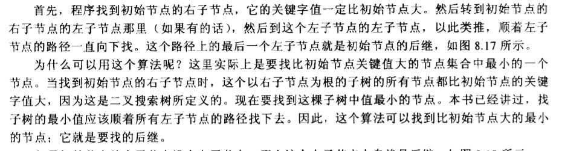
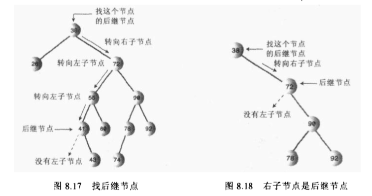
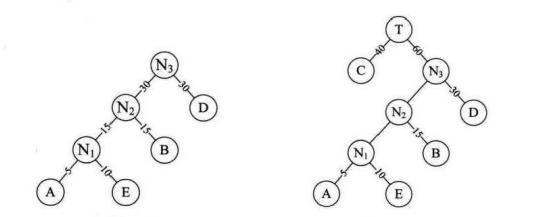
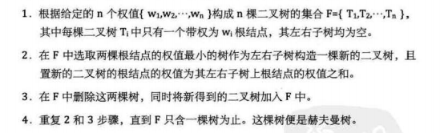
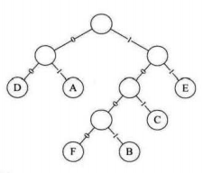

树
树是一个很有意思的数据结构，而且有很多种不同的树结构，比如BST，哈夫曼树，红黑树，AVL树，2-3-4树，B树等。它们的定义和功能优势各不相同，所以在这里进行一个简单的总结区分。
BST(二叉搜索树)
BST的一个特点是一个节点的关键值都大于它的左子孙节点的关键值，小于等于它的右子孙节点的关键值。树在执行查找，插入，删除的时间复杂度都为O(logN)。
在BST中查找，插入都比较容易实现，但是删除的话需要考虑的情况就比较复杂，包括删除节点有无子节点，有一个子节点，有两个子节点等情况。如果节点有两个节点的话，再删除时应该寻找后继节点代替它并适当调整树的结构，使其满足BST的定义。
下面两幅图就介绍了如何寻找后继节点，在实例程序中使用getSuccessor()方法实现。


实例程序中仅包含了基本的查找，插入，删除方法。还增加了树的遍历方法，包括前序，中序，后序遍历，不过实现思路基本类似，也并不难理解。
package datastructure;
import java.util.Stack;
public class TreeApp {
public static void main(String[] args) {
Tree theTree = new Tree();
theTree.insert(13, 11);
theTree.insert(1, 2.3);
theTree.insert(4,5.7);
theTree.insert(21, 2.3);
theTree.insert(41,5.7);
theTree.insert(3, 11);
System.out.println("展示：");
theTree.displayTree();
System.out.println("查找：");
int value = 21;
Node found = theTree.find(value);
if(found != null){
System.out.print("Found: ");
found.displayNode();
System.out.println();
}
else
System.out.println("No Found");
System.out.println("遍历：(1:前序，2：中序，3：中序)");
theTree.traverse(1);
theTree.traverse(2);
theTree.traverse(3);
System.out.println("删除：");
boolean delete = theTree.delete(value);
if(delete){
System.out.println("Delete: " + value);
}
else
System.out.println("Can't delete");
System.out.println("展示：");
theTree.displayTree();
}
}
class Node{
public int iData; // 树节点的数据结构
public double dData;
public Node leftChild;
public Node rightChild;
public void displayNode(){
System.out.println("{" + iData + "," + dData + "}");
}
}
class Tree{
public Node root;
public Tree(){
root = null;
}
public Node find(int key){
Node current = root;
while(current.iData != key){
if(key < current.iData){
current = current.leftChild;
}
else
current =current.rightChild;
if(current == null){
return null;
}
}
return current;
}
public void insert(int id, double dd){
Node newNode = new Node();
newNode.iData = id;
newNode.dData = dd;
if(root == null){
root = newNode;
}
else{
Node current = root;
Node parent;
while(true){
parent = current; // 先将当前节点保存为父亲节点
if(id < current.iData){
current = current.leftChild;
if(current == null){
parent.leftChild = newNode;
return;
}
}
else {
current = current.rightChild;
if (current == null){
parent.rightChild = newNode;
return;
}
}
}
}
}
// 删除节点，考虑的情况比较多
public boolean delete(int key){
Node current = root;
Node parent = root;
boolean isLeftChild = true;
// 寻找节点
while(current.iData != key){
parent = current;
if(key < current.iData){
isLeftChild = true;
current = current.leftChild;
}
else{
isLeftChild = false;
current = current.rightChild;
}
if (current == null){
return false;
}
}
// 没有子节点(是root？isLeftChild？)
if(current.leftChild == null && current.rightChild == null){
if(current == root){
root = null;
}
else if(isLeftChild){
parent.leftChild = null;
}
else {
parent.rightChild = null;
}
}
else if(current.rightChild == null){
// 没有右子节点
if(current == root){
root = current.leftChild;
}
else if(isLeftChild){
parent.leftChild = current.leftChild;
}
else
parent.rightChild = current.leftChild;
}
else if(current.leftChild == null){
// 没有左子节点
if (current == root){
root = current.rightChild;
}
else if(isLeftChild){
parent.leftChild = current.rightChild;
}
else
parent.rightChild = current.rightChild;
}
else{
// 既有左子节点，又有右子节点
// 中序后继代替，找出后继节点
Node successor = getSuccessor(current);
if(current == root){
root = current;
}
else if(isLeftChild){
current.leftChild = successor;
}
else
current.rightChild =successor;
// 把当前节点的左子节点，设置为后继节点的左子节点
successor.leftChild = current.leftChild;
}
return true;
}
private Node getSuccessor(Node delNode) {
Node successorParent = delNode;
Node successor = delNode;
Node current = delNode.rightChild; // 查找删除节点的右子树
while (current != null){
successorParent = successor; // 保存后继节点
successor = current;
current = current.leftChild; // 找左子节点
}
if(successor != delNode.rightChild){
// 后继节点为左子节点
successorParent.leftChild = successor.rightChild;
successor.rightChild = delNode.rightChild;
}
return successor; // 返回后继节点
}
// 树的遍历(前序，中序，后序)
public void traverse(int traverseType){
switch (traverseType){
case 1:
System.out.println("前序遍历：");
preOrder(root);
break;
case 2:
System.out.println("中序遍历：");
inOrder(root);
break;
case 3:
System.out.println("后序遍历：");
postOrder(root);
break;
}
System.out.println();
}
// 前序遍历
// 1.访问节点，2.调用自身遍历该节点的左子树，3.调用自身遍历该节点的右子树
private void preOrder(Node localRoot) {
if (localRoot != null){
System.out.print(localRoot.iData + " ");
preOrder(localRoot.leftChild);
preOrder(localRoot.rightChild);
}
}
private void inOrder(Node localRoot) {
if (localRoot != null){
preOrder(localRoot.leftChild);
System.out.print(localRoot.iData + " ");
preOrder(localRoot.rightChild);
}
}
private void postOrder(Node localRoot) {
if (localRoot != null){
preOrder(localRoot.leftChild);
preOrder(localRoot.rightChild);
System.out.print(localRoot.iData + " ");
}
}
public void displayTree(){
java.util.Stack globalStack = new Stack();
globalStack.push(root);
int nBlanks = 32;
boolean isRowEmpty = false;
System.out.println(".............................................");
while (isRowEmpty == false){
java.util.Stack localStack = new Stack();
isRowEmpty = true;
for (int i = 0; i < nBlanks ; i++) {
System.out.print(' ');
}
while (globalStack.isEmpty() == false){
Node temp = (Node)globalStack.pop();
if(temp != null){
System.out.print(temp.iData);
localStack.push(temp.leftChild);
localStack.push(temp.rightChild);
if(temp.leftChild != null || temp.rightChild != null){
isRowEmpty = false;
}
}
else{
System.out.print("--");
localStack.push(null);
localStack.push(null);
}
for (int j = 0; j < nBlanks * 2 - 2; j++ ){
System.out.print(' ');
}
}
System.out.println();
nBlanks /= 2;
while (localStack.isEmpty() == false){
globalStack.push(localStack.pop());
}
}
System.out.println(".............................................");
}
}
哈夫曼树
哈夫曼树是带权路径长度最短的树，权值较大的结点离根较近。哈夫曼树是二叉树但不是BST，常用于数据压缩算法，称为哈夫曼编码，出现频率大的字符编码位数少，出现频率小的字符编码位数多一些。
构造：将权值从小到大排序，后将权值最小的两个并在一起成新的二叉树。


举个例子：利用构造哈夫曼树进行哈夫曼编码，实现数据压缩。假设假设各个字母频率为A 27,B 8,C 15,D 15,E 30,F 5，按照字母频次进行编码压缩后，数据的存储位会减少许多。
| 字母 | A | B | C | D | E | F |
|---|---|---|---|---|---|---|
| 二进制字符 | 01 | 1001 | 101 | 00 | 11 | 1000 |
